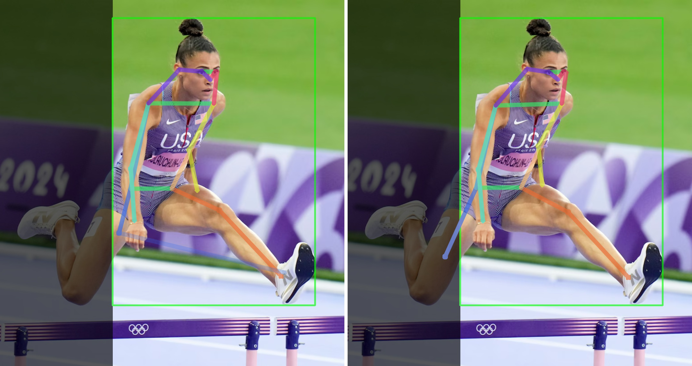

ProbPose introduces a probabilistic framework for human pose estimation, focusing on reducing false positives by predicting keypoint presence probabilities and handling out-of-image keypoints. It also introduces the new Ex-OKS metric to evaluate models on false positive predictions.
Current Human Pose Estimation methods have achieved significant improvements. However, state-of-the-art models ignore out-of-image keypoints and use uncalibrated heatmaps as keypoint location representation. To address these limitations, we propose ProbPose, which predicts for each keypoint: a calibrated probability of keypoint presence at each location in the activation window, the probability of being outside of it, and its predicted visibility. To address the lack of evaluation protocols for out-of-image keypoints, we introduce the CropCOCO dataset and the Extended OKS (Ex-OKS) metric, which extends OKS to out-of-image points. Tested on COCO, CropCOCO, and OCHuman, ProbPose shows significant gains in out-of-image keypoint localization while also improving in-image localization through data augmentation. Additionally, the model improves robustness along the edges of the bounding box and offers better flexibility in keypoint evaluation. The code and models will be released on the project website for research purposes.
Below is the comparison with SOTA (ViTPose). ProbPose trained on cropped images has more stable predictions even with substantial crop. Training on cropped images also improves predictions on the bounding box borders and in occluded keypoints.
Following images showcase stability of prediction with gradual cropping. ViTPose (left) is not stable once a limb is cropped and tries to predict the limb in the image. ProbPose (right) is stable even with substantial crop.
BibTex Code Here